A real reading pace
Set the speed in characters per second, or in BPM from 20 to 250 to read in time with a track — not an arbitrary dial from 1 to 10.
Version 1.5.0 is the current release
A teleprompter for your computer that reads at a real human pace — characters per second, or the BPM of your track — and marks every pause you write into the script.
Freally Teleprompt is free today, but it might not be free forever: future versions may be sold.
There are no downloads yet, and the source code is private.
Reading a script on camera usually means a scroll that is too fast or too slow, a pause you forgot, and a second screen a line behind.
Freally Teleprompt is a teleprompter for your computer. Open the script you were sent, set the pace in characters per second or to the BPM of your track, and it reads at a real human speed — every pause you wrote marked in the script, and every screen on the same word.

Set the speed in characters per second, or in BPM from 20 to 250 to read in time with a track — not an arbitrary dial from 1 to 10.
Type -- for a short pause or --3 for a three-second hold. Each becomes a chip in the editor, and lights up as the read reaches it.

One engine, counted in characters, drives your preview, the talent's projector — flipped for prompter glass if you need it — and phones on your own network, so they never drift apart.

Import Word, RTF, PDF, plain text and Markdown files as clean prompter text, with a report of anything it could not bring across.

A line that starts with # becomes a section marker in a jump list, beside find and replace and live word counts.

Tap your own tempo, hear a click with a count-in, see the bars and beats, and rehearse for a section-by-section timing report.

Every command has a key you can change. Foot pedals and presenter remotes bind like any key, and a key can work even when the app is not in front.

Autocomplete in 18 languages from word lists inside the app, and dictation in English: say it, and it is written into the script.
No account, no telemetry, no cloud. Scripts are plain files on your computer, and the app asks the internet one thing: whether a newer version exists.
Every release so far, then the steps planned on the way to 2.0. A step gets its version number when it ships, and a plan can change.
v0.100.0DoneThe foundation: the app runs on Windows, macOS and Linux, asks you to accept its licence, and scrolls a script with the character-based engine from Freally Capture.v0.200.0DoneThe standalone teleprompter: a script library, pause chips, a projector for the talent with a mirror flip, a mirror to phones on your own network, a real transport, BPM pacing and read-aloud.v0.300.0DoneOffline autocomplete: it finishes words and common phrases as you type, in all 18 languages, from word lists inside the app.v1.0.0DoneThe first full release: a one-minute welcome tour, a keyboard and screen-reader pass, a theme that follows your system, and updates that install only after you say yes.v1.1.0DoneWrite your script by speaking: dictation that runs on your computer, with nothing to train.v1.2.0DoneDictation, finished: a proper record button, words that land where your cursor is, and an undo that takes back one thing you said.v1.3.0DoneReading to time: a tempo you tap to match your delivery, a metronome, a bar and beat counter, rehearsal with a timing report, and labels that cost no read time.v1.4.0DoneGetting the script in: import Word, RTF, PDF, text and Markdown files, section markers with a jump list, find and replace, and script statistics.v1.5.0DoneAnything in the room can drive it: foot pedals and presenter remotes, keys that work when the app is not in front, and a rebindable map of every command.rigPlannedBuilt for the rig: a vertical flip for overhead glass, lens and safe-margin guides, an elapsed and remaining time display, and presets for reading at a distance.takesPlannedNever lose a take: recovery of unsaved edits after a crash, settings that travel with each script, local version history, and export to PDF for a paper backup.writingPlannedHelp with the writing: a rhyme finder, syllable counts for each line, a tongue-twister check and suggested pauses — from dictionaries, with no model.remotePlannedDrive it from anywhere: a phone-sized control page, plus MIDI and OSC for the desk you already run — on your own network only, and off by default.showPlannedRun a whole show: rundowns with a duration for each item, more than one prompter output, and a big countdown and cue-light display for the floor.recordPlannedRecord while you prompt: a webcam take as the script runs, or audio only with your section markers written into the file as chapters.languagesPlannedEvery script, every language: emphasis on single words, furigana above the line, right-to-left polish for Arabic, and vertical Japanese and Chinese.v2.0.0The goalVersion 2.0: all of the above, on Windows, macOS and Linux.Done means released and tagged. Even so, this site offers no downloads.
Dictation is the one part of the app that uses machine learning: Vosk, an open-source speech recogniser, with a small English model of about 40 MB inside the app. It runs on your computer, uploads and downloads nothing, understands English only, and stays off until you switch it on. Everything else is ordinary code and word lists.
Each time it starts, the app asks GitHub whether a newer version exists. The request carries no script, no settings and no identifier, and nothing installs unless you say yes. Everything else works with no connection at all.
Some teleprompters scroll by listening to you read. Freally Teleprompt 1.5.0 scrolls at the pace you set, and you, a key or a pedal take over when the read changes. A voice-following mode was tried in 1.0.0 and removed in 1.1.0.
No download link, no button and no beta. The source code is private as well.
The changelog lists everything that changed in Freally Teleprompt, version by version, in all eighteen languages.